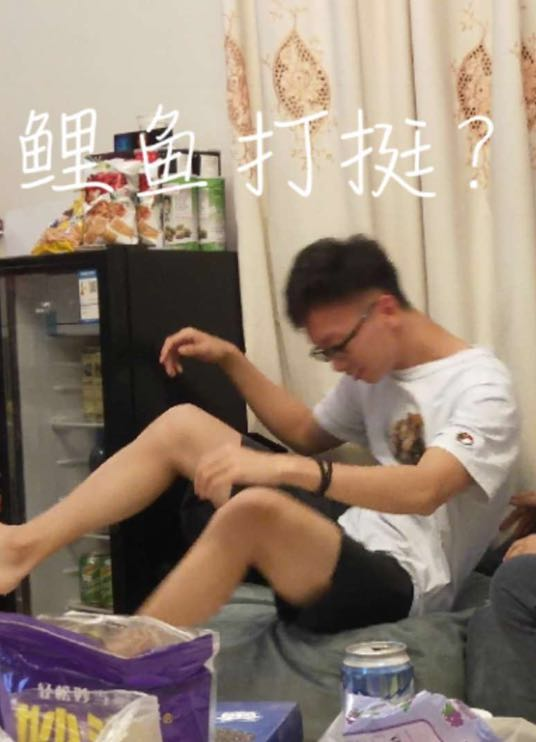

SESE
Volleyball
关于
技能
作品
博客
日历
联系方式
其他

HELLO
姚梓淳
环院球场司令塔
年龄
20
所在城市
广州
邮箱
不清楚
手机
不知道
下载Yaozichun的更多照片
大家好，我叫姚梓淳，是环院排球男队的首发二传手。
平时喜欢健身，喜欢早睡早起，规律作息。
上次吃外卖吃到发烧后，饮食从此更加健康了。
大家少点找我约球，因为最近有女朋友了。
排球技能
发球
一传
二传
扣球
拦网
探头